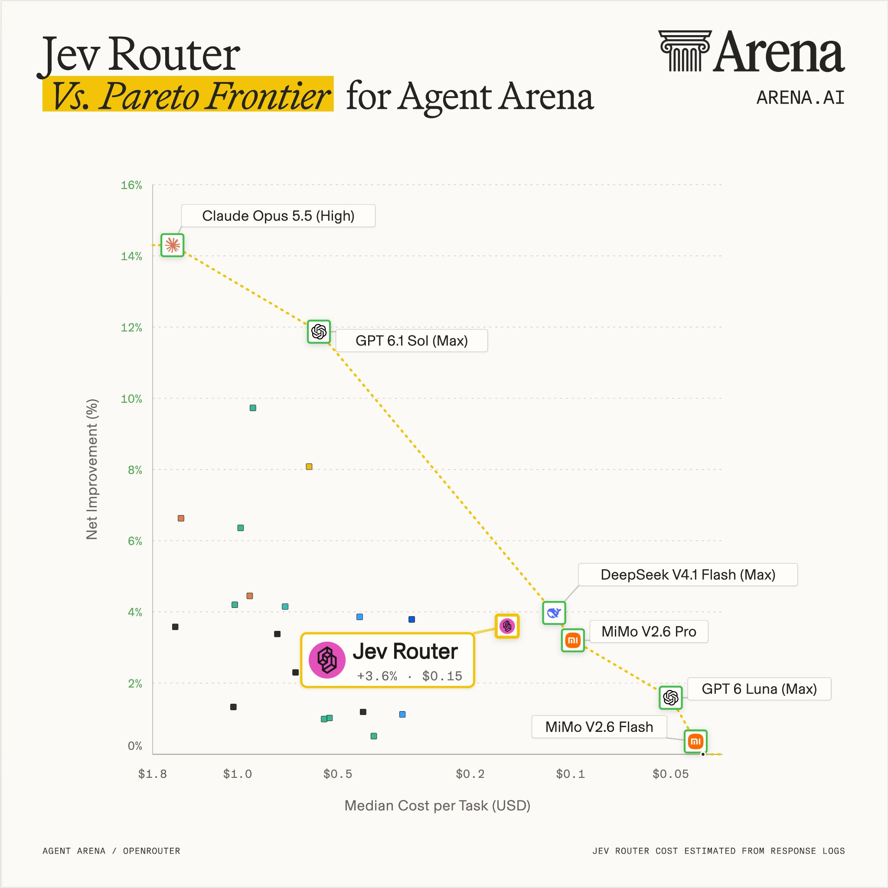
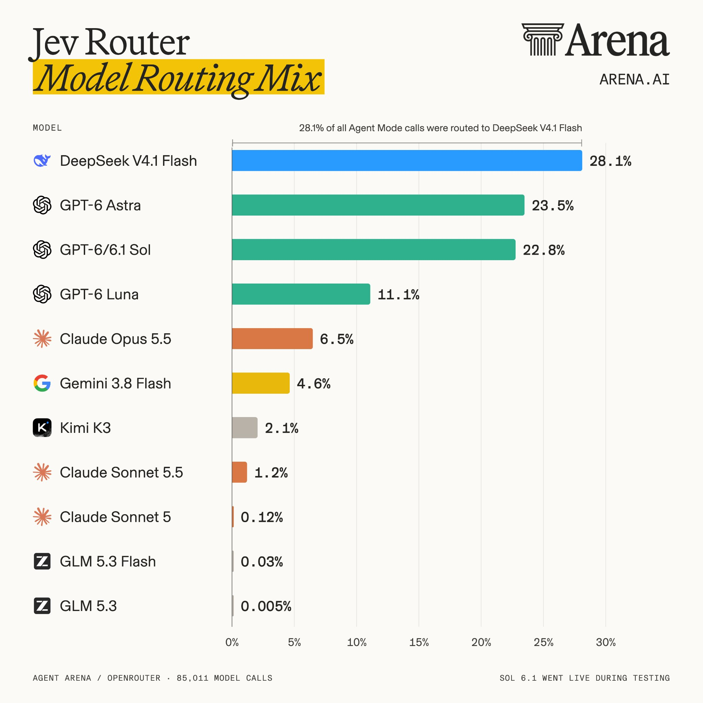
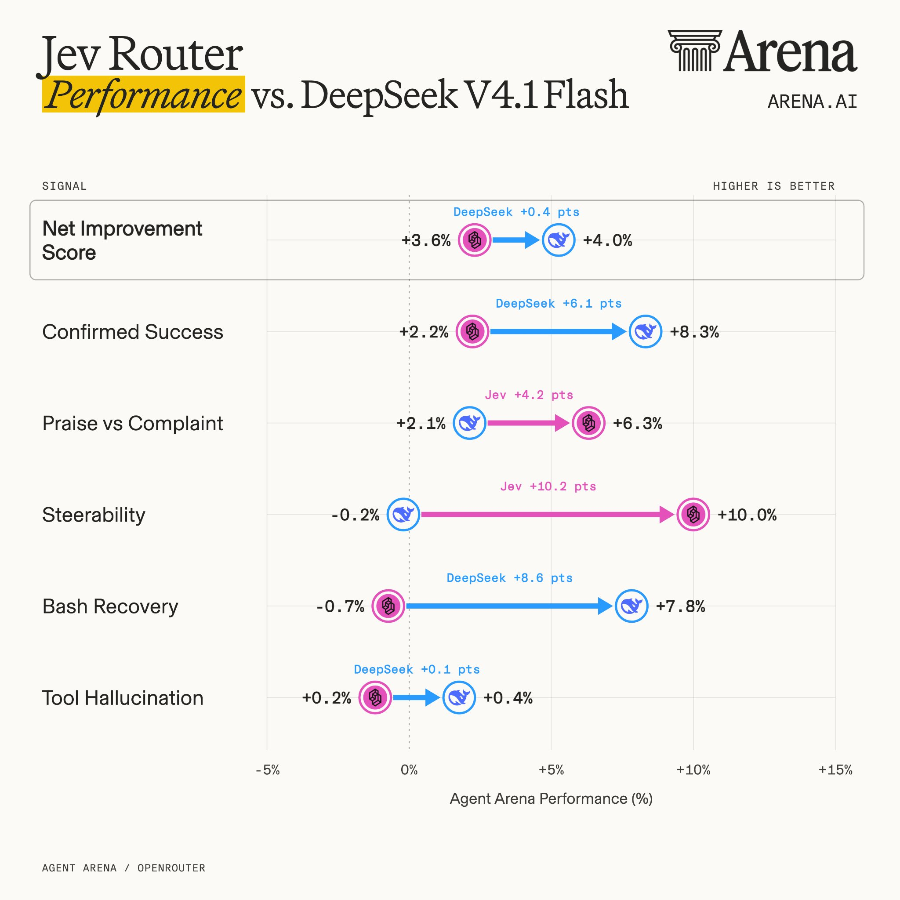
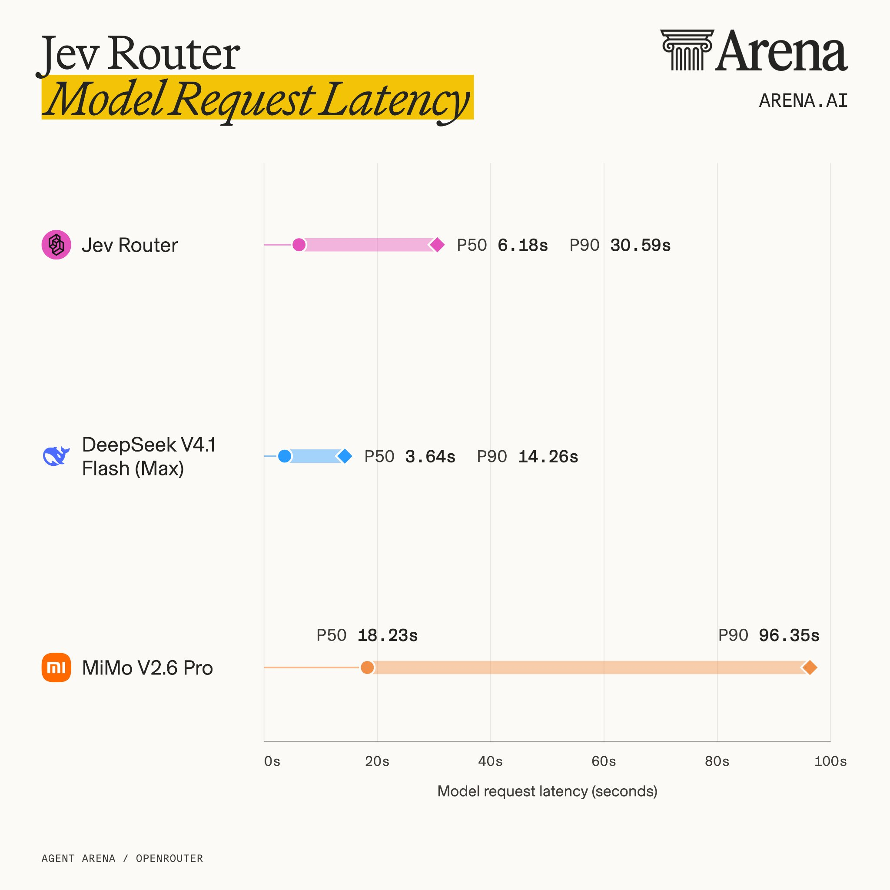

Arena 独立实测 Jev Router：4,700+ 真实智能体会话的第三方成绩单
原文：X @arena 推文串 · 推文串全 6 条（含 1 条用户跟帖）· @arena（Arena.ai）· 2026-10-07
译文为社区学习用途的非官方中文翻译，版权归原作者所有。
作者与来源
Arena.ai（@arena），X 约 23.3 万关注者，官方简介：「AI 与真实世界相遇的地方。我们通过社区驱动的评测来测量并推进 AI 前沿。」它就是知名大模型竞技场 LMArena（原 UC Berkeley LMSYS Chatbot Arena）背后的运营公司——靠真实用户盲测投票给模型排名，是业界引用最多的第三方评测机构之一。Agent Arena 是其面向智能体（agentic）任务的评测线：模型在真实会话里跑完整任务，从任务成败、成本、延迟到用户反馈全部记录。本次评测经 OpenRouter 采集真实模型调用，覆盖 4,700+ 会话、85,011 次模型调用（图表脚注口径）；Jev Router 的成本从响应日志估算。
被测对象 Jev Router 是 TypeSafe 的模型路由方案：用 Jev 决策模型判断「这次调用该交给哪个 LLM」。这是 Jev 路由用法第一次拿到大规模独立第三方实测——此前社区只有从业者自报（本库 24 号的「账单降 90%」）和 Agent Harness 论文的模拟环境数据（99.5% 流量路由到便宜模型），这次是真实会话上的成绩单，结论也冷静得多。原作者的收尾一句是：我们的结果说明了为什么模型路由很难——同时平衡任务成功率、可引导性、成本和延迟，仍然是一个悬而未决的挑战。
收录说明：主帖与 4 条自跟帖全译，另收录 1 条用户跟帖（@tomdringer 的提问，截至快照未见官方回复）。
正文（推文串全译）
1/5 主帖
我们评测了 @typesafeai 的 Jev Router，在 Agent Arena 上进行。
横跨 4,700 多个真实智能体会话的测试显示：
Jev Router 没有改进当前的帕累托前沿。 要达到与 DeepSeek V4.1 Flash（Max）相近的性能，它的成本高出 38%，模型请求的中位延迟是后者的 1.7 倍。
不过它路由到的基本都是帕累托有效的模型。 选得最多的是 DeepSeek V4.1 Flash，GPT-6.1 Sol 和 GPT-6 Luna 也是常见选择。
Jev Router 的关键强项是可引导性（steerability）。 其 +10% 的得分几乎追平 Claude Opus 5.5（High）的 +10.48——这凸显了 Jev 在用户给反馈后能有效路由到更强 LLM 的能力。
更多发现见下方推文串。

2/5 路由分布
Jev 优先考虑效率，把大多数调用路由给了 DeepSeek V4.1 Flash——占全部模型调用的 28.1%。
它对 OpenAI 模型的偏好明显多于 Anthropic 的模型。GPT-6 Astra 是第二受欢迎的选择（23.5%），其次是其他 GPT 模型：Sol（22.8%）和 Luna（11.1%）。

3/5 榜单模拟：与 DeepSeek 正面对比
如果把 Jev Router 放上 Agent Arena 排行榜，它会拿到 +3.6% 的净改进得分，每任务中位成本 $0.155。
它的排名会低于 DeepSeek V4.1 Flash（正是它路由最多的模型），但在这两项上击败 DeepSeek：可引导性（+10.0% 对 −0.2%）和表扬与抱怨比（+6.3% 对 +2.1%）。
DeepSeek 更强的地方在：确认成功率（+8.3% 对 +2.2%）、Bash 恢复（+7.8% 对 −0.7%）和工具幻觉（+0.4% 对 +0.2%）。
这里的关键信号是可引导性——它证明了 Jev 响应用户纠正的强大能力。实际上，路由器的得分距离 Claude Opus 5.5（High）并不远，只差 0.48 个百分点。

4/5 延迟对比
最后，把路由器的端到端请求延迟与邻近的帕累托最优模型比较。
结果显示 Jev Router 的中位延迟更高：6.18 秒，对比 DeepSeek V4.1 Flash（Max）的 3.64 秒。
差距在 P90（最慢的 10% 请求）进一步拉大：Jev Router 要 30.59 秒，DeepSeek 只要 14.26 秒。

5/5 总结
总结一下：Jev Router 做的是聪明的选择——它最常用的 5 个模型里有 4 个在帕累托前沿上，可引导性也显著地强。
但这些加起来还不构成更好的权衡。直接调用 DeepSeek V4.1 Flash 就能以更低的成本和延迟拿到相近的性能。
我们的结果说明了为什么模型路由很难：同时平衡任务成功率、可引导性、成本和延迟，仍然是一个悬而未决的挑战。
跟帖（用户提问）
Tom Dringer（@tomdringer） 提问：
如果你在一个会话中途开始反驳它、给它施压，它的路由行为会不会不一样？这是我最想戳一戳的点。
（截至快照时间 2026-10-08，官方尚未回复。）
译注
帕累托前沿（Pareto frontier）到底是什么：名字来自意大利经济学家维尔弗雷多·帕累托（与「二八法则」是同一个人的两个不同概念，这里用的是以他命名的经济学效率概念）。当你要同时顾两件互相牵制的事——这里是「便宜」和「好用」——一个方案就叫帕累托最优，如果找不到另一个方案两样都比它强：想更便宜就得接受更弱，想更强就得接受更贵。把所有方案画成「横轴成本、纵轴性能」的散点，最外围那圈没人能全面取代的点连成的线，就是帕累托前沿。
用图 1 的真实数据举例：Claude Opus 5.5（High） 最强但最贵（约 +14%、$1.8 量级），它占住「钱不是问题时要最好」的位置；MiMo V2.6 Flash 最便宜但最弱，占住「够用就行时要最省」的位置；DeepSeek V4.1 Flash（Max）（+4.0%、约 $0.13）在便宜档里没有谁既比它便宜又比它强——它们各占一个生态位，都在前沿上。
「没站上前沿」为什么是句重话：Jev Router 的点是 +3.6%、$0.15——DeepSeek 一个模型就比它又便宜（$0.13）又更强（+4.0%）。这叫「被支配」（dominated）：路由器兜了一圈，选出来的组合还不如直接用一个现成模型。路由器的全部意义本该是「组合出任何单个模型都拿不到的性价比」，所以 Arena 的结论 1 实际是在说：这次它没做到本职。反过来说，结论 2（路由到的基本都是前沿模型）和结论 3（可引导性 +10%）说明选模型的品味没错、响应反馈的机制有效——差的是最后一公里的性价比。
可引导性（steerability）：用户给出纠正或反馈后，系统随之改进的程度。Agent Arena 用负反馈会话前后的表现变化来度量。路由方案的理论优势之一就是「发现用户不满 → 换更强的模型」，实测证明这条路确实走得通（+10.0%），这也是 Jev Router 本次最站得住的卖点。
指标名直译对照：Confirmed Success（确认成功：任务被实际验证完成）、Praise vs Complaint（表扬与抱怨比：用户正负反馈之比）、Bash Recovery（Bash 恢复：命令行出错后自我修复）、Tool Hallucination（工具幻觉：调用不存在或不适用的工具）。
与本库其他条目的对照，值得并排读：
24 号（polydao 宣称路由「账单降 90%」，从业者自报口径）——本篇独立实测给出的答案冷峻得多：与直接调 DeepSeek 相比贵 38%、慢 1.7 倍。
Agent Harness 论文（arXiv 2610.02267，模拟环境里 99.5% 流量路由到便宜模型）——两份材料测的层面不同：论文证明「省钱来自架构分层」，Arena 证明「路由器本身难成性价比赢家」。合读的结论：路由的价值在延迟与弹性调度，不在单点降本。
30 号（情酱的对照实验方法论）——Arena 这次是同一精神在机构侧的版本：真实会话、大样本、可复算。
成本口径：图中 Jev Router 的成本由响应日志估算（图 1 脚注），与厂商计费口径可能有出入；测试期间 Sol 6.1 上线（图 2 脚注），说明候选模型池在评测中段发生过变化。